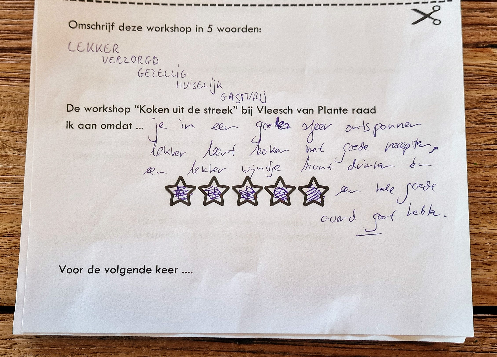

Koken uit de Streek
vanaf €75,- p.p.
Kook met de seizoenen mee, met producten rechtstreeks van de boer uit de Veluwse IJsselvallei. Samen bereiden en eten we minstens 3 gangen, knus en huiselijk. Het receptenboek op maat en eventuele restjes gaan mee naar huis.
Bij Plante thuis ben je met 8 tot 12 personen, voor €75,- p.p. inclusief btw en thee of koffie, zonder drank. Liever bij jou thuis? Dan neemt Mandy streekproducten en materiaal mee, ook voor kleinere gezelschappen, vanaf €85,- p.p.
